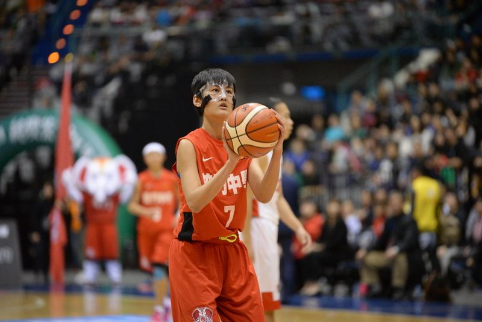

HBL專區
| 日期 | 組別 | 時間 | 淺色隊 | 比數 | 深色隊 | 比賽地點 |
|---|---|---|---|---|---|---|
| 107/01/28(日) | 女子 | 14:00 | 淡水商工 | : | 南湖高中 | 台北體育館1樓 |
| 107/01/28(日) | 男子 | 15:40 | 東泰高中 | : | 南山高中 | 台北體育館1樓 |
| 107/01/28(日) | 男子 | 17:20 | 泰山高中 | : | 東山高中 | 台北體育館1樓 |
| 107/01/28(日) | 男子 | 19:00 | 高苑工商 | : | 松山高中 | 台北體育館1樓 |
| 107/01/28(日) | 女子 | 14:00 | 苗栗高商 | : | 普門高中 | 陽明高中體育館 |
| 107/01/28(日) | 女子 | 15:40 | 永仁高中 | : | 滬江高中 | 陽明高中體育館 |
| 107/01/28(日) | 女子 | 17:20 | 北市陽明 | : | 南山高中 | 陽明高中體育館 |
| 107/01/29(一) | 女子 | 12:20 | 滬江高中 | : | 淡水商工 | 台北體育館1樓 |
| 107/01/29(一) | 女子 | 14:00 | 普門高中 | : | 北市陽明 | 台北體育館1樓 |
| 107/01/29(一) | 男子 | 15:40 | 能仁家商 | : | 東泰高中 | 台北體育館1樓 |
| 107/01/29(一) | 男子 | 17:20 | 東山高中 | : | 高苑工商 | 台北體育館1樓 |
| 107/01/29(一) | 男子 | 19:00 | 松山高中 | : | 泰山高中 | 台北體育館1樓 |
| 107/01/29(一) | 女子 | 14:00 | 南山高中 | : | 苗栗高商 | 台北體育館4樓 |
| 107/01/29(一) | 男子 | 15:40 | 南山高中 | : | 南湖高中 | 台北體育館4樓 |
| 107/01/29(一) | 女子 | 17:20 | 南湖高中 | : | 永仁高中 | 台北體育館4樓 |
| 107/01/30(二) | 男子 | 12:20 | 能仁家商 | : | 東山高中 | 台北體育館1樓 |
| 107/01/30(二) | 女子 | 14:00 | 淡水商工 | : | 苗栗高商 | 台北體育館1樓 |
| 107/01/30(二) | 女子 | 15:40 | 南山高中 | : | 滬江高中 | 台北體育館1樓 |
| 107/01/30(二) | 男子 | 17:20 | 高苑工商 | : | 東泰高中 | 台北體育館1樓 |
| 107/01/30(二) | 男子 | 19:00 | 南山高中 | : | 松山高中 | 台北體育館1樓 |
| 107/01/30(二) | 女子 | 14:00 | 永仁高中 | : | 北市陽明 | 台北體育館4樓 |
| 107/01/30(二) | 男子 | 15:40 | 泰山高中 | : | 南湖高中 | 台北體育館4樓 |
| 107/01/30(二) | 女子 | 17:20 | 普門高中 | : | 南湖高中 | 台北體育館4樓 |
| 107/01/31(二) | 男子 | 12:20 | 南湖高中 | : | 高苑工商 | 台北體育館1樓 |
| 107/01/31(二) | 女子 | 14:00 | 苗栗高商 | : | 永仁高中 | 台北體育館1樓 |
| 107/01/31(二) | 女子 | 15:40 | 滬江高中 | : | 普門高中 | 台北體育館1樓 |
| 107/01/31(二) | 男子 | 17:20 | 東山高中 | : | 南山高中 | 台北體育館1樓 |
| 107/01/31(二) | 男子 | 19:00 | 松山高中 | : | 能仁家商 | 台北體育館1樓 |
| 107/01/31(二) | 女子 | 14:00 | 南湖高中 | : | 南山高中 | 台北體育館4樓 |
| 107/01/31(二) | 女子 | 15:40 | 北市陽明 | : | 淡水商工 | 台北體育館4樓 |
| 107/01/31(二) | 男子 | 17:20 | 東泰高中 | : | 泰山高中 | 台北體育館4樓 |
| 107/02/02(五) | 男子 | 12:20 | 松山高中 | : | 東泰高中 | 台北體育館1樓 |
| 107/02/02(五) | 女子 | 14:00 | 永仁高中 | : | 南山高中 | 台北體育館1樓 |
| 107/02/02(五) | 男子 | 15:40 | 高苑工商 | : | 南山高中 | 台北體育館1樓 |
| 107/02/02(五) | 男子 | 17:20 | 東山高中 | : | 南湖高中 | 台北體育館1樓 |
| 107/02/02(五) | 男子 | 19:00 | 泰山高中 | : | 能仁家商 | 台北體育館1樓 |
| 107/02/02(五) | 女子 | 14:00 | 滬江高中 | : | 北市陽明 | 台北體育館4樓 |
| 107/02/02(五) | 女子 | 15:40 | 南湖高中 | : | 苗栗高商 | 台北體育館4樓 |
| 107/02/02(五) | 女子 | 17:20 | 淡水商工 | : | 普門高中 | 台北體育館4樓 |
| 107/02/03(六) | 女子 | 12:20 | 北市陽明 | : | 南湖高中 | 台北體育館1樓 |
| 107/02/03(六) | 女子 | 14:00 | 普門高中 | : | 永仁高中 | 台北體育館1樓 |
| 107/02/03(六) | 男子 | 15:40 | 南湖高中 | : | 松山高中 | 台北體育館1樓 |
| 107/02/03(六) | 男子 | 17:20 | 南山高中 | : | 泰山高中 | 台北體育館1樓 |
| 107/02/03(六) | 男子 | 19:00 | 能仁家商 | : | 高苑工商 | 台北體育館1樓 |
| 107/02/03(六) | 女子 | 14:00 | 苗栗高商 | : | 滬江高中 | 台北體育館4樓 |
| 107/02/03(六) | 女子 | 15:40 | 南山高中 | : | 淡水商工 | 台北體育館4樓 |
| 107/02/03(六) | 男子 | 17:20 | 東泰高中 | : | 東山高中 | 台北體育館4樓 |
| 107/02/04(日) | 男子 | 12:20 | 南湖高中 | : | 東泰高中 | 台北體育館1樓 |
| 107/02/04(日) | 男子 | 15:40 | 南山高中 | : | 泰山高中 | 台北體育館1樓 |
| 107/02/04(日) | 女子 | 15:40 | 普門高中 | : | 南山高中 | 台北體育館1樓 |
| 107/02/04(日) | 男子 | 17:20 | 東泰高中 | : | 東山高中 | 台北體育館1樓 |
| 107/02/04(日) | 男子 | 17:20 | 能仁家商 | : | 高苑工商 | 台北體育館1樓 |
| 107/02/04(日) | 女子 | 14:00 | 北市陽明 | : | 苗栗高商 | 台北體育館4樓 |
| 107/02/04(日) | 女子 | 15:40 | 南湖高中 | : | 滬江高中 | 台北體育館4樓 |
| 107/02/04(日) | 女子 | 17:20 | 永仁高中 | : | 淡水商工 | 台北體育館4樓 |
男子組複賽
| 日期 | 組別 | 時間 | 淺色隊 | 比數 | 深色隊 | 比賽地點 |
|---|---|---|---|---|---|---|
| 106/12/19(二) | A | 12：40 | 南山高中 | 98:61 | 南湖高中 | 高雄中學 |
| 106/12/19(二) | B | 15：20 | 東泰高中 | 82:47 | 強恕高中 | 高雄中學 |
| 106/12/19(二) | A | 10：00 | 東山高中 | 71:48 | 木柵高工 | 高雄巨蛋 |
| 106/12/19(二) | B | 14：00 | 能仁家商 | 78:66 | 青年高中 | 高雄巨蛋(FOX轉播) |
| 106/12/19(二) | A | 17：20 | 高苑工商 | 92:55 | 宜蘭高中 | 高雄巨蛋(FOX轉播) |
| 106/12/19(二) | B | 19：00 | 松山高中 | 62:76 | 泰山高中 | 高雄巨蛋(FOX轉播) |
| 106/12/20(三) | A | 14：00 | 宜蘭高中 | 56:94 | 東山高中 | 高雄中學 |
| 106/12/20(三)) | B | 15：20 | 泰山高中 | 87:55 | 青年高中 | 高雄中學 |
| 106/12/20(三) | B | 10：00 | 強恕高中 | 61:97 | 能仁家商 | 高雄巨蛋 |
| 106/12/20(三) | A | 12：40 | 南湖高中 | 66:56 | 木柵高工 | 高雄巨蛋(FOX轉播) |
| 106/12/20(三) | A | 17：20 | 高苑工商 | 72:91 | 南山高中 | 高雄巨蛋(FOX轉播) |
| 106/12/20(三) | B | 19：00 | 東泰高中 | 53:77 | 松山高中 | 高雄巨蛋(FOX轉播) |
| 106/12/21(四) | A | 10：00 | 宜蘭高中 | 57:73 | 南湖高中 | 高雄巨蛋 |
| 106/12/21(四) | A | 12：40 | 木柵高工 | 48:89 | 南山高中 | 高雄巨蛋 |
| 106/12/21(四) | B | 14：00 | 能仁家商 | 99:67 | 東泰高中 | 高雄巨蛋(FOX轉播) |
| 106/12/21(四) | B | 15：20 | 強恕高中 | 60:80 | 泰山高中 | 高雄巨蛋(FOX轉播) |
| 106/12/21(四) | B | 17：20 | 青年高中 | 83:88 | 松山高中 | 高雄巨蛋(FOX轉播) |
| 106/12/21(四) | A | 19：00 | 東山高中 | 76:79 | 高苑工商 | 高雄巨蛋(FOX轉播) |
| 106/12/22(五) | B | 10：00 | 青年高中 | 66:71 | 東泰高中 | 高雄巨蛋 |
| 106/12/22(五) | B | 12：40 | 松山高中 | 79:58 | 強恕高中 | 高雄巨蛋 |
| 106/12/22(五) | A | 14：00 | 南山高中 | 102:54 | 宜蘭高中 | 高雄巨蛋(FOX轉播) |
| 106/12/22(五) | A | 15：20 | 南湖高中 | 82:87 | 東山高中 | 高雄巨蛋(FOX轉播) |
| 106/12/22(五) | A | 17：20 | 木柵高工 | 60:65 | 高苑工商 | 高雄巨蛋(FOX轉播) |
| 106/12/22(五) | B | 19：00 | 泰山高中 | 76:82 | 能仁家商 | 高雄巨蛋(FOX轉播) |
| 106/12/23(六) | A | 10：00 | 宜蘭高中 | 53:63 | 木柵高工 | 高雄巨蛋 |
| 106/12/23(六) | B | 12：40 | 東泰高中 | 79:88 | 泰山高中 | 高雄巨蛋 |
| 106/12/23(六) | B | 14：00 | 強恕高中 | 75:68 | 青年高中 | 高雄巨蛋(FOX轉播) |
| 106/12/23(六 | )A | 15：20 | 東山高中 | 63:101 | 南山高中 | 高雄巨蛋(FOX轉播) |
| 106/12/23(六) | A | 17：20 | 高苑工商 | 79:70 | 南湖高中 | 高雄巨蛋(FOX轉播) |
| 106/12/23(六) | B | 19：00 | 能仁家商 | 88:82 | 松山高中 | 高雄巨蛋(FOX轉播) |
| 106/12/24(日) | 外卡一 | 11：30 | 強恕高中 | 71:68 | 宜蘭高中 | 高雄巨蛋(FOX轉播) |
| 106/12/24(日) | 外卡二 | 13：10 | 木柵高工 | 73:81 | 青年高中 | 高雄巨蛋(FOX轉播) |
| 106/12/24(日) | 外卡三 | 16：00 | 南湖高中 | 81:69 | 強恕高中 | 高雄巨蛋(FOX轉播) |
| 106/12/24(日) | 外卡四 | 17：40 | 青年高中 | 68:75 | 東泰高中 | 高雄巨蛋(FOX轉播) |
男子MVP
104學年度MVP：吳季穎 (南山高中)
105學年度MVP：高國豪 (松山高中)
106學年度MVP：暫待
女子MVP

104學年度MVP：彭曉彤 (淡水商工)

105學年度MVP：羅培甄 (普門高中)
106學年度MVP：暫待